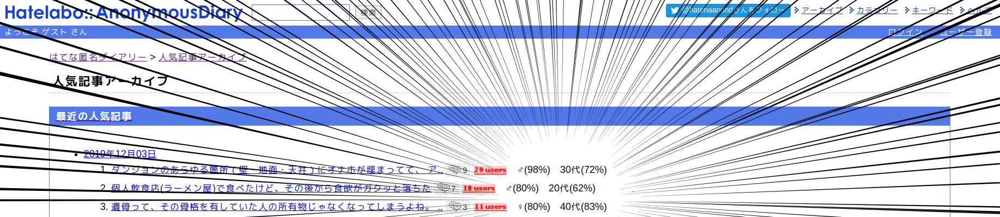

はてな匿名ダイアリーにおける著者プロファイルの推定
2019/11/10@システム主専攻実習（機械学習班）
長瀬幸翼
はてな匿名ダイアリー
- 「はてなブログ」のはてなが運営する匿名のブログサービス
- 「人気記事アーカイブ」を見ると雰囲気がわかる
🤔
- 一人称代名詞が俺、"妻"について話している → 男性？
- かわいい子供 & ご両親がご存命 → 20代後半~30代前半？？
著者のプロファイルを推定できたらたのしそう
やったこと
- 年代はなんとなく難しそうなので、とりあえず性別が自動推定できるか試すことに
- 先行研究（池田ら「blog の著者の性別推定」など）を調査 → 学習に使う素性を検討
- はてな匿名ダイアリーはラベル付けが大変 & 文字数不足 → Amebaブログなどからデータセットを構築
- F# & ML.NETで学習・分類のプログラムを実装
- Random Forestで二値分類問題として解いた
- Precision, Recallなどを評価
- Precisionは76%程度
これからやりたいこと
- 精度を上げる
- Chrome Extension をつくって実際のページに推定結果を表示
- 年代も推定（これは時間的に無理かも）
発表を聞きに来るべき人
- F# / ML.NET に興味がある
- 卒業研究で NLP をやろうと思っている
- インターネットが好き